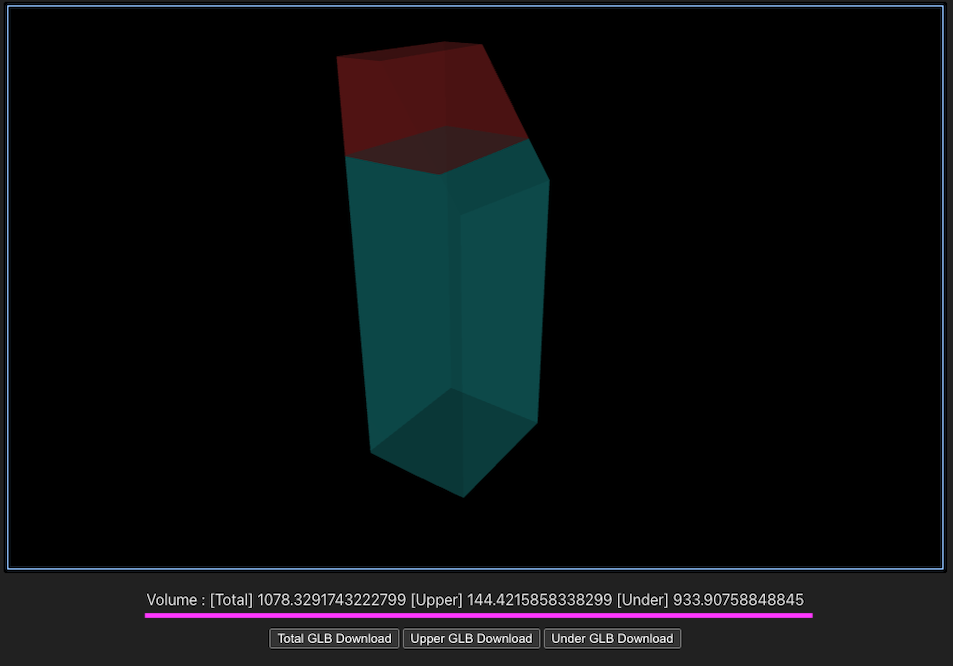
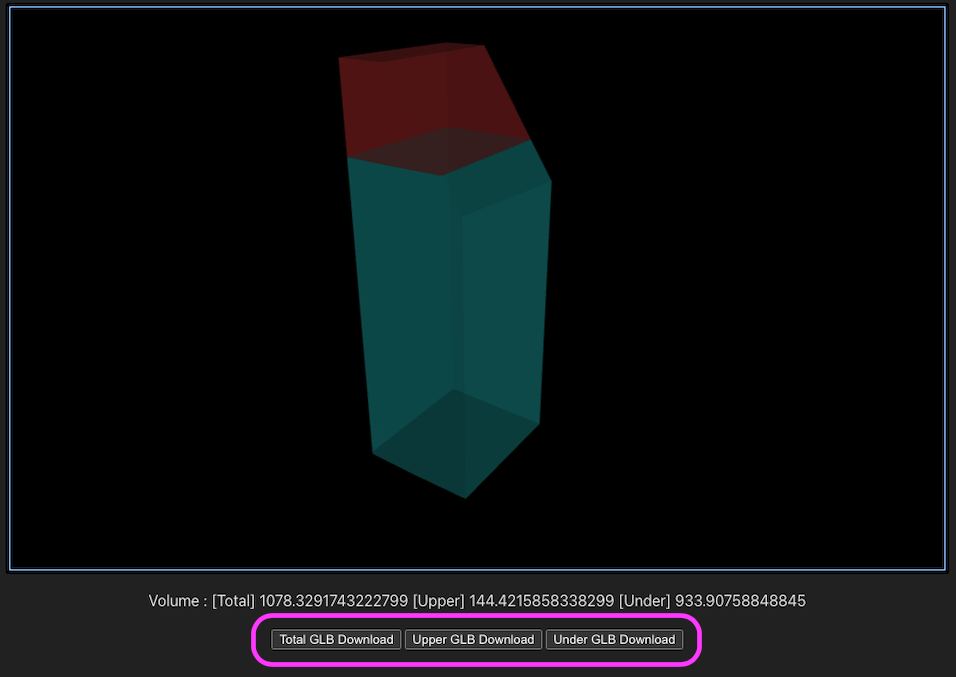

アプリケーションガイド
このページではアプリケーションの利用法について記載します。
アプリケーションの概要
- 建築物情報を受け取り、建築可能な建物の最大ボリュームと既存建築物の差分を3Dモデルを生成します。
- 建築物の3Dモデルデータの生成や、隣地斜線制限などの条件に従いモデルの加工を行う必要があるため、ブラウザ上で動くリアルタイム3Dエンジンの
Babylon.jsを使用しています。 - 生成した3Dモデルから、容積値の算出とGLB形式の書き出しを行います。
- 本アプリケーションでは機能確認用のサンプルを用意しています。仮のJSON情報から3Dモデルを生成し、容積の数値表示とGLBファイルのダウンロードをテストできます。
3Dモデルデータ生成に必要な情報
3Dオブジェクトを生成するには既存建築物の以下の情報が必要になります。
- 敷地面積、階高、容積率
- 建物形状の高さの上限の算出に使用します。
- 建物形状のローカル座標
- 建物のフットプリント座標から建物形状のモデルデータを生成します。このモデルデータから、各種制限によるブーリアン処理を行います。
- 隣地斜線制限面ローカル座標、道路斜線制限面ローカル座標
- 制限面座標から建物形状のカッティング処理に必要なモデルを生成しブーリアン処理を行います。
- 地域の高さ制限
- 敷地面積、階高、容積率から算出する高さ上限より優先される高さ制限値です。
- 元のビルの高さ
- 建築可能な建物の最大ボリュームと既存建築物の差分を表すために使用します。
建築物の情報はJSONで受け取り、定義されているBuildingParamという型エイリアスに格納されます。
本プロジェクトではサンプルとしてbuildingParamSample.tsファイルにテスト用のJSONテキストデータを用意しています。
APIの概要
src/service/api/VolumeShapeGenerator.tsファイルの関数を利用します。
- 容積値とGLBの取得は
getVolumeShapesData関数を利用します。 - Babylon.jsのScene上のObjectを破棄する場合は
disposeObject関数を利用します。
APIの処理の流れ
APIの引数に渡すデータを用意します。
- 生成に必要な建物情報のJSONを用意します。
- Babylon.js上で3Dモデルの加工処理を行うため、Babylon.jsのSceneを生成します。
APIを実行します。
src/service/api/VolumeShapeGenerator.tsのgetVolumeShapesData関数を実行します。- 建物情報のJSONテキスト、
Babylon.jsのScene、容積計算の詳細値、その他、取得するGLBファイルのPrefixやテストモードフラグのパラメータを引数として入力します。 - 容積計算の詳細値は容積の精度に関わります。デフォルトは0.05です。値が小さい程詳細な計算を行いますが処理時間に影響します。
- 建物情報のJSONテキスト、
APIは実行されると以下の処理を行います。
1: 建築可能な建物の最大ボリュームの3Dモデルデータ生成を開始します。
- 建物形状のモデルデータを生成します。生成するモデルの高さは地域の高さ制限の値にします。
- 各種条件に従い、ブーリアン処理を行うためのモデルを作成し、既に生成した建物モデル対して減算処理を行います。
- 隣地斜線制限に従いブーリアン処理を行うためのモデルを作成し、同様に減算処理を続けていきます。
- 道路斜線制限に従い、同様に減算処理を続けていきます。
- 「階高の各フロア面積合計 ÷ 敷地面積 が 容積率以下」となる条件の最大の高さを算出し、その高さ以上を減算処理で削ります。
以上の処理で、建築可能な建物の最大ボリュームの生成が完了します。
2: 容積形状の体積計算とGLBの作成を行います。
- 建築可能な建物の最大ボリュームのモデルをGLBとして書き出します
- 建築可能な建物の最大ボリュームの容積を取得します。
- 容積は積層の面積 x 積層の間隔となる
volumeCalcDetailValの値で求め算出します。
- 容積は積層の面積 x 積層の間隔となる
- 建築可能な建物の最大ボリュームと既存建築物の差分データの取得に取りかかります。
- 元のビルの高さの情報に従い、その高さ以下を減算処理で削ります。このモデルが建築可能な建物の最大ボリュームと既存建築物の差分になります。
- 差分のモデルの容積を取得し、GLBを書き出します。
- 最大ボリュームの容積 - 残ったモデルの容積 で建築可能な建物の最大ボリュームと既存建築物の差分
- 元のビルの高さ以下のモデルも生成し、容積の取得とGLB書き出しを行います。
取得した各容積値とGLBをAPI実行の結果として返します。
機能確認用サンプル
src/main.tsからsrc/sample/VolumeShapeGenerateController.tsのstartOperation関数が呼ばれサンプルがスタートします。
サンプル用のBabylon.jsのSceneとJSONテキストを引数としてAPIを実行し、容積値とGLBを受け取ります。
データの受け取りが成功すると、容積値の結果を表示します

GLBのダウンロードボタンが表示されます。 ダウンロードボタンをクリックすると端末にGLBファイルがダウンロードされます。

実際にブラウザで確認するにはProjectのRootからコマンドnpm run devを実行するかnpm run build実行後にnpm run previewを実行します。
指定されたローカルサーバーのURLをブラウザで開き、サンプルの確認を行う事ができます。